For whatever reason, work has been incredibly hard for me to get motivated about. I really don’t want to do it. This is probably related to the rest of it, which is that I don’t want to do *anything*. So, for the past month (past summer?), I’ve gotten virtually nothing done. My research has stalled, and I feel like crap about it.
Recently, I decided to procrastinate further by updating everything to Avida 3. This appears to have been a mistake. I have discovered that my runs no longer perform the way that they used to. Specifically, EQU is being lost very early in the evolutionary process. So, I need to figure this out. To that end, I will need to replicate runs that I had done before, with same configs and seeds and see if I get the same results. This is a critical first step to being able to continue with Avida 3.
STATUS:
rosiec@Thor:~/Volumes/AtlantisSSH/__research/devolab_research/evolution_of_modularity/raw_data/097_Bottlenecking_Collection__update_to_avida3__initial_config_tests__fixed_lineage_counts__fixed_mutation_rate$ python ../../../scripts/quickplot.py fitness average.dat 4 "control_intertwined_970*/data/" control"punish_intertwined_970*/data/" punish
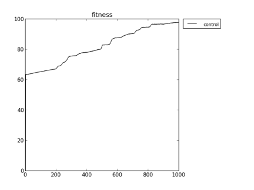
rosiec@Thor:~/Volumes/AtlantisSSH/__research/devolab_research/evolution_of_modularity/raw_data/097_Bottlenecking_Collection__update_to_avida3__initial_config_tests__fixed_lineage_counts__fixed_mutation_rate$ python ../../../scripts/quickplot.py -i 6 --title "Tasks and Lineage Counts Timeseries – 097 Initial Config" --xlabel "Updates" --xtick_multiplier 100 --ylabel "Counts" --data_members 2 tasks_lineages tasks.dat 3 "control_intertwined_970*/data/" control_tasks lineage_counts.dat 4 "control_intertwined_970*/data/" control_lineage_counts tasks.dat 3 "noreward_intertwined_970*/data/" noreward_tasks lineage_counts.dat 4 "noreward_intertwined_970*/data/" noreward_lineage_counts tasks.dat 3 "punish_intertwined_970*/data/" punish_tasks lineage_counts.dat 4 "punish_intertwined_970*/data/" punish_lineage_counts
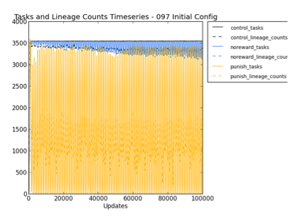
rosiec@Thor:~/Volumes/AtlantisSSH/__research/devolab_research/evolution_of_modularity/raw_data/098_Bottlenecking_Collection__update_to_avida3__no_sterilize_unstable__fixed_lineage_counts__fixed_mutation_rate$ python ../../../scripts/quickplot.py -i 6 --title "Tasks and Lineage Counts Timeseries - 098 No Sterilize Unstable" --xlabel "Updates" --xtick_multiplier 100 --ylabel "Counts" --data_members 2 tasks_lineages tasks.dat 3 "control_intertwined_9*/data/" control_tasks lineage_counts.dat 4 "control_intertwined_9*/data/" control_lineage_counts tasks.dat 3 "noreward_intertwined_9*/data/" noreward_tasks lineage_counts.dat 4 "noreward_intertwined_9*/data/" noreward_lineage_counts tasks.dat 3 "punish_intertwined_9*/data/" punish_tasks lineage_counts.dat 4 "punish_intertwined_9*/data/" punish_lineage_counts rosiec@Thor:~/Volumes/AtlantisSSH/__research/devolab_research/evolution_of_modularity/raw_data/098_Bottlenecking_Collection__update_to_avida3__no_sterilize_unstable__fixed_lineage_counts__fixed_mutation_rate$ python ../../../scripts/quickplot.py -i 6 --title "Tasks and Lineage Counts Timeseries - 099 No Fixed Length or Sterilize Unstable" --xlabel "Updates" --xtick_multiplier 100 --ylabel "Counts" --data_members 2 tasks_lineages tasks.dat 3 "control_intertwined_9*/data/" control_tasks lineage_counts.dat 4 "control_intertwined_9*/data/" control_lineage_counts tasks.dat 3 "noreward_intertwined_9*/data/" noreward_tasks lineage_counts.dat 4 "noreward_intertwined_9*/data/" noreward_lineage_counts tasks.dat 3 "punish_intertwined_9*/data/" punish_tasks lineage_counts.dat 4 "punish_intertwined_9*/data/" punish_lineage_counts
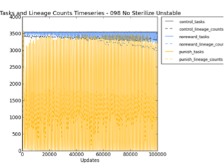 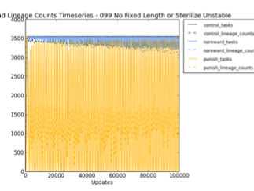
STATUS:
bottleneck behaves differently than a very low fitness bottleneck. I think it does behave differently, because I see that there are organisms that derive from those penalized by the low-fitness bottleneck hanging around until timepoint TB. This wouldn’t happen ever if the bottleneck instant-killed everything. Actually, maybe not. They might have had offspring before the kill event that were not themselves penalized. Argh. That offspring would not get marked as having been penalized, and the lineage marker would not show them as having been penalized-organism descendants. So, we should be able to easily tell if there is a difference between instant-kill and fitness penalized bottlenecking modes.
rosiec@Thor:~/Volumes/AtlantisSSH/__research/devolab_research/evolution_of_modularity/raw_data/098_Bottlenecking_Collection__update_to_avida3__no_sterilize_unstable__fixed_lineage_counts__fixed_mutation_rate$ python ../../../scripts/quickplot.py --error --title "Lineage Counts - 098 No Sterilize Unstable" --xlabel "Updates" --xtick_multiplier 100 --ylabel "Counts" lineage_counts lineage_counts.dat 4 "control_intertwined_9*/data/" control lineage_counts.dat 4 "noreward_intertwined_9*/data/" noreward lineage_counts.dat 4 "punish_intertwined_9*/data/" punish
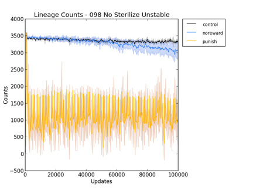
STATUS
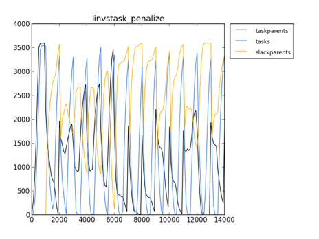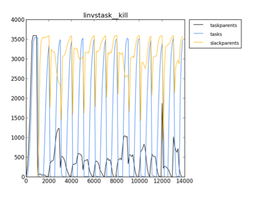
rosiec@Thor:~/Volumes/AtlantisSSH/__research/devolab_research/evolution_of_modularity/raw_data/100_Bottlenecking_Collection__final_config$ python ../../../scripts/quickplot.py --error --title "Lineage Counts - Job 100" --xlabel "Updates" --xtick_multiplier 100 --ylabel "Counts" lineage_counts lineage_counts.dat 4 "control_intertwined_*/data/" control lineage_counts.dat 4 "noreward_intertwined_*/data/" noreward lineage_counts.dat 4 "punish_intertwined_*/data/" punish
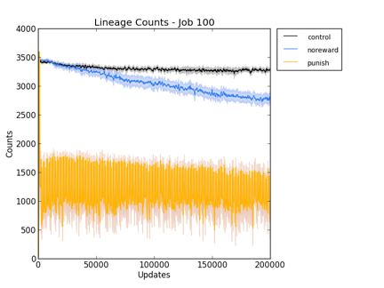
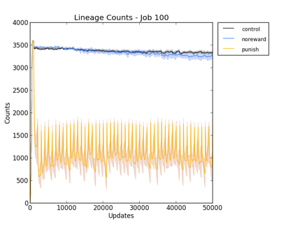
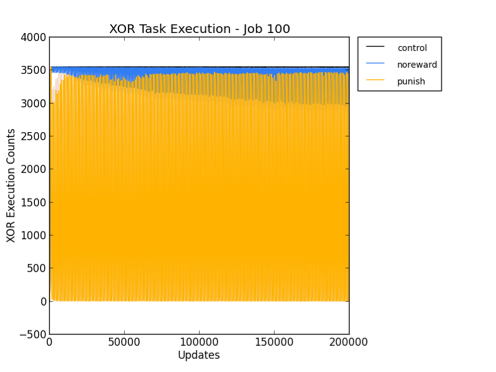
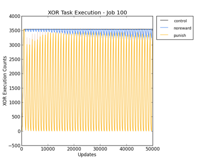
rosiec@Thor:~/Volumes/AtlantisSSH/__research/devolab_research/evolution_of_modularity/raw_data/100_Bottlenecking_Collection__final_config$ python ../../../scripts/quickplot.py --error --title "Lineage Counts - Job 100 - Punish" --xlabel "Updates" --xtick_multiplier 100 --ylabel "Counts" lineage_counts__punish lineage_counts.dat 3 "punish_intertwined_*/data/" NoEQU lineage_counts.dat 4 "punish_intertwined_*/data/" EQU
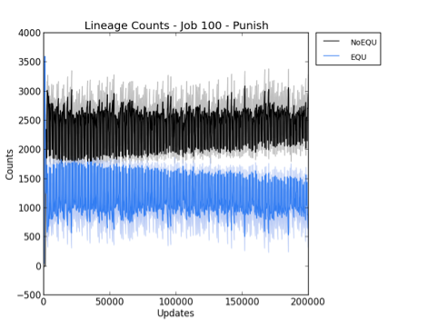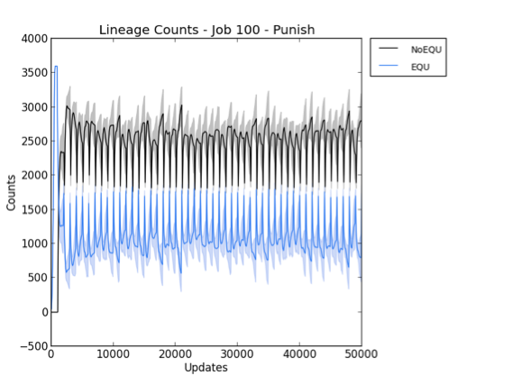
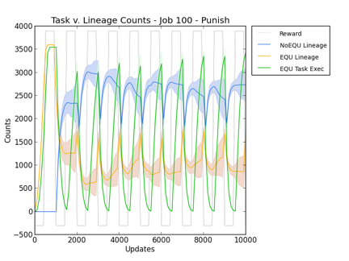